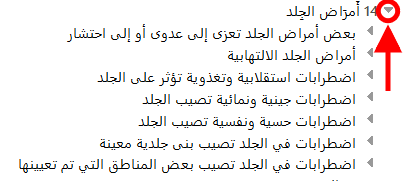

AR
AR
عند تصفح التصنيف-11، ستجد التسلسل الهرمي لموضوعات التصنيف على يسار الشاشة. عند النقر فوق أي عنصر، ستظهر تفاصيل هذا الكيان على يمين الشاشة.
في البداية، يعرض النظام عناصر المستوى الأعلى فقط. ومع ذلك، يمكنك عرض العناصر التابعة بالنقر فوق المثلثات الصغيرة الموجودة على يسار العناصر.
يمكنك استخدام زر  لإغلاق جميع الفروع المفتوحة والعودة إلى المستوى الأعلى للتسلسل الهرمي.
لإغلاق جميع الفروع المفتوحة والعودة إلى المستوى الأعلى للتسلسل الهرمي.